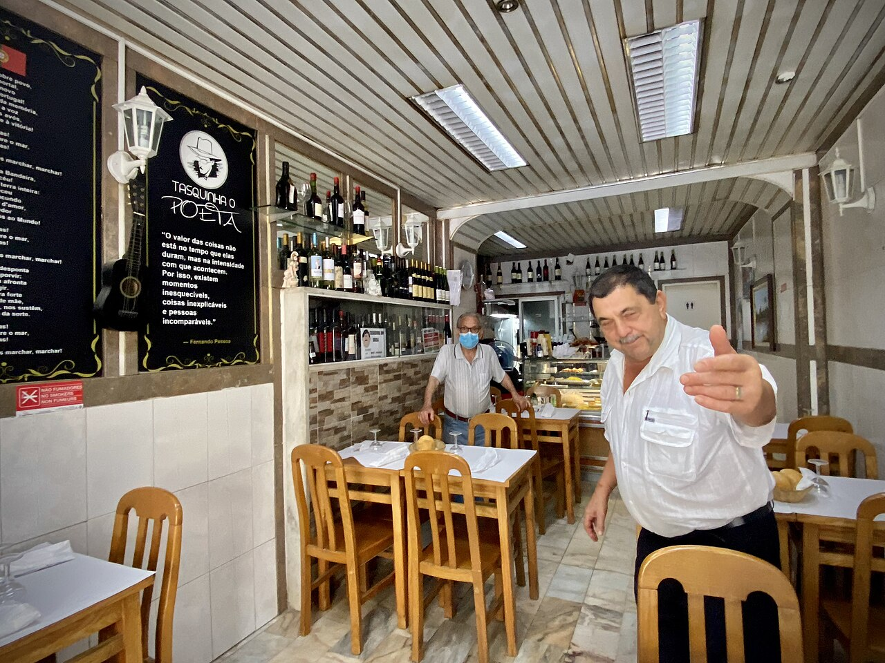
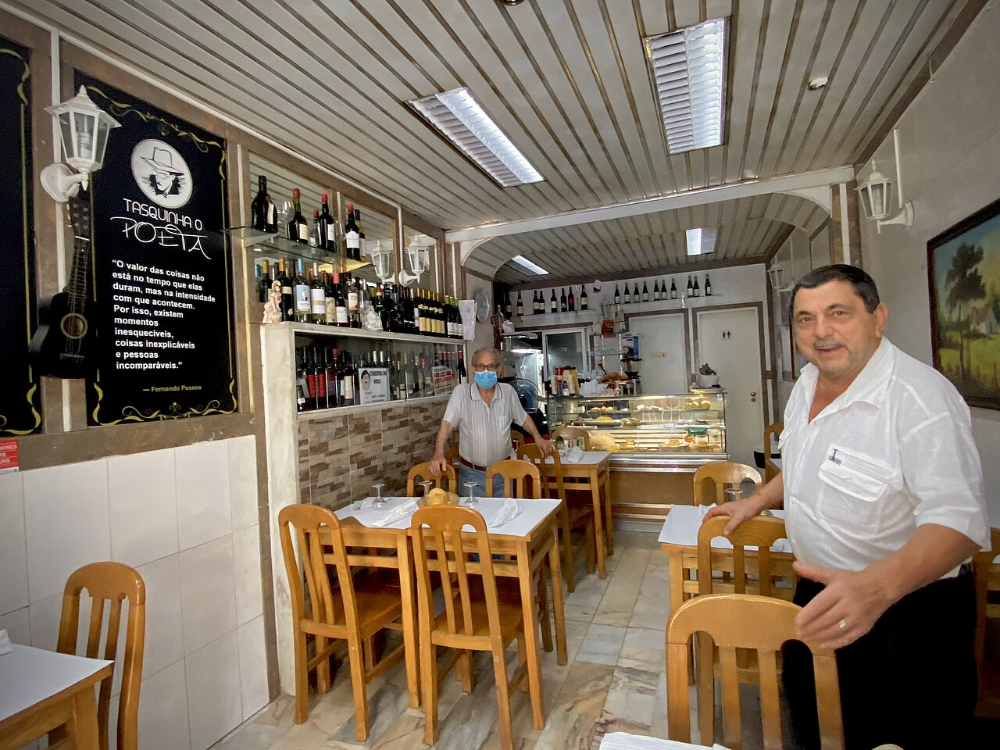

Quarteira backstreet tasca - traditional Portuguese, no airs, no booking. Walk in, see what's on, point at someone else's plate if you don't speak Portuguese yet. The fallback if Tico Tico is rammed on Thursday night.


A tasca is the lowest-fi, most honest version of a Portuguese restaurant - a few tables, a counter, a daily blackboard, no menu in English. A Tasca in Quarteira is exactly that. Walk-in only, fills up with locals after 21:00, empties by 23:00.
Order the prato do dia - the day's set - or whatever the table next to you is eating. Bread, olives and cheese arrive as couvert (charged). Decline politely if you don't want them. House wine in a jug. You'll spend less than €25 a head with wine.